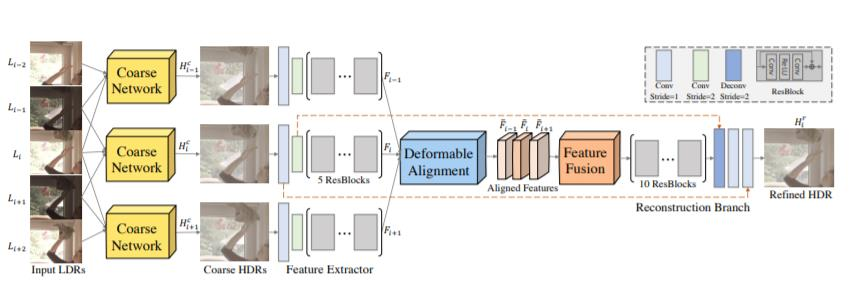

About Me
I am currently a postdoctoral research fellow at S-Lab in Nanyang Technological University, working with Prof. Weisi Lin. I received my Ph.D. degree from Dept. of Computer Science at the University of Hong Kong in January 2021. I did my Ph.D. research at Computer Vision Lab in HKU, advised by Dr. Kenneth K.Y. Wong. Prior to studying at HKU, I received my B.Eng. from Huazhong University of Science and Technology.
My interests are centered around Computer Vision and Deep Learning. Current research topics include:
- Low level vision, including image quality assessment, restoration and enhancement.
- Image-to-image translation
- 3D-aware image synthesis/rendering/editing
- Face related tasks
News
- 2022-06: Our work QuanTexSR (renamed as FeMaSR) has been accepted by ACM MM2022.
- 2022-03: We release our work about blind image resolution, QuanTexSR, together with the codes in Github.
- 2022-02: We release a PyTorch toolbox for IQA, IQA-PyTorch, as well as a comprehensive survey Awesome-Image-Quality-Assessment.
- 2021-07: One paper about HDR video reconstruction is accepted by ICCV 2021.
- 2021-03: Our paper PSFR-GAN about face SR has been accepted by CVPR2021.
- 2020-11: Our paper SPARNet about face SR has been accepted by TIP2020.
Experience
| Sep 2021 - Present | Postdoctoral research fellow at S-Lab in NTU, working with Prof. Weisi Lin |
| Mar 2021 - Aug 2021 | Research Assistant at GAP Lab CUHKSZ, worked with Dr. Xiaoguang Han |
| Nov 2019 - Mar 2021 | Research Intern at Alibaba DAMO Academy, worked with Prof. Lei Zhang and Dr. Xiaoming Li |
| May 2019 - Oct 2019 | Research Visitor at VLLab UC Merced, worked with Prof. Ming-Hsuan Yang | Jun 2018 - Mar 2019 | Research Intern at Tencent AI Lab, worked with Prof. Zhifeng Li and Dr. Dihong Gong |
Publications


arXiv Project Page Github
HDR Video Reconstruction: A Coarse-to-fine Network and A Real-world Benchmark Dataset
2021
arXiv Project Page Github


Preprints

PhD Dissertation
Face Sketch Synthesis and Face Super Resolution in the Wild with Deep Learning
Dept. of Computer Science, The University of Hong Kong, 2020
HKU Theses Online
Professional Activities
- Conference Reviewer:
- IEEE Conference on Computer Vision and Pattern Recognition (CVPR)
- International Conference on Computer Vision (ICCV)
- European Conference on Computer Vision (ECCV)
- Association for the Advancement of Artificial Intelligence (AAAI)
- Journal Reviewer:
- IEEE Transactions on Image Processing (TIP)
- IEEE Transactions on Multimedia (TMM)
- Elsevier Journal of Neurocomputing (Neurocomputing)
Awards
- Hong Kong PhD Fellowship, HKU, 2015 - 2018
- National Scholarship, HUST, 2011 - 2012
Teaching
- [2017/18 2nd semester]: COMP3317 Computer Vision ~ Teaching Assistant
- [2015/16 2nd semester]: COMP2396 Object-Oriented Programming and Java ~ Teaching Assistant
- [2016/17 1st semester]: COMP2396 Object-Oriented Programming and Java ~ Teaching Assistant